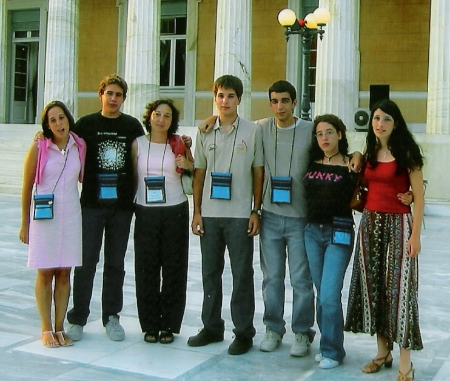

Sebastià Xambó Descamps
Universitat Politècnica de Catalunya
_____________________________________
Además del Premio de la Sociedad Matemática Europea (EMS), hecho que ha sido un móvil principal para escribir este artículo, el año 2020 ha deparado a Joaquim Serra2 otras distinciones estelares: un proyecto del Consejo de Investigación Europeo (ERC starting grant 2021-2025); el nombramiento como Profesor Asociado de la ETH de Zurich; y la publicación de extensos artículos en revistas matemáticas de primer nivel: [2] (con Figalli); [3] (con Serena Dipierro y Enrico Valdinoci*); [4] (con Xavier Cabré*, A. Figalli y Xavier Ros-Oton*); [5] (con A. Figalli y X. Ros-Oton); [6] (con X. Cabré y Eleonora Cinti); [7] (con Xavier Fernández-Real). Estas obras, junto con otras de años recientes, como [8] (con E. Cinti y E. Valdinoci), [9] (con A. Figalli), [10] (con Luis Caffarelli* y X. Ros-Oton) y [11, 12] (con X. Ros-Oton), son timbres de certificación para las mencionadas distinciones y para otras que la precedieron, como los premios Josep Teixidor (otorgado por la SCM, edición de 2016), José Luis Rubio de Francia (RSME, 2018) y Antonio Valle (SEMA, 2019).
Con estos indicios inequívocos de la alta calidad de la obra matemática de J.Serra, así como la consideración de sus actuales circunstancias, nos llevan a indagar cuáles han sido los hitos principales de su trayectoria investigadora desde sus primeras publicaciones en 2012 hasta la actualidad, los factores determinantes de su perfil investigador, o las personas e instituciones más significativas en su formación. El objeto de este artículo es intentar dar respuesta a estas y otras preguntas, hasta donde nos sea posible, no solo como pinceladas biográficas, sino también para que puedan contribuir a consideraciones útiles más generales sobre el funcionamiento de nuestra comunidad matemática.
Es un feliz deber expresar aquí mi gratitud a Joaquim Serra por las informaciones que ha tenido a bien compartir conmigo y sin las cuales no hubiera podido emprender la tarea de elaborar este artículo. Agradecimiento también a Mariona Petit y Josep Grané, por comunicarme sus recuerdos de los pasos matemáticos iniciales de Serra; a Mercedes Sánchez Benito, José Luis Díaz-Barrero y Antoni Gomà Nassarre por enviarme diversas informaciones sobre la participación de Serra en el Cangur de la SCM y en las olimpiadas matemáticas (OMs); a Miquel Teixidó y Ferran Mazaira, por evocar detalles del período que compartieron en la empresa Arcvi; y a Xavier Ros-Oton y Xavier Cabré por su paciente disponibilidad a aclararme cuantas dudas les he consultado. En relación a las OMs, el libro [13] y la página Web [14] han sido consultados para obtener o validar diversos datos consignados en lo que sigue.
Joaquim Serra nació el 20 de octubre de 1986 en Barcelona y cursó la enseñanza primaria en la escuela pública Pau Casals, situada en el número 134 de la calle Providència, barrio de Gracia, a pocos minutos andando desde su domicilio. De esta etapa recuerda el impacto de las clases de ajedrez que les impartía el profesor de lengua y muy especialmente el énfasis que ponía en la importancia del razonamiento.
Cursó los cuatro cursos de la ESO y los dos del bachillerato en el instituto La Sedeta. Situado en la calle (de la) Indústria 62-73, también a pocos minutos andando desde su domicilio, comparte con una escuela y un centro cívico el edificio de lo que fue una fábrica textil (1899-1975) cuyo nombre es el popular con que se la conocía debido a los telares mecánicos de seda, una línea de producción que en su época fue muy innovadora. Estos equipamientos existen por una reivindicación vecinal que se opuso a la construcción de viviendas planeada por la entidad bancaria que había comprado el inmueble. El conflicto fue resuelto por el ayuntamiento de la ciudad expropiando el solar e impulsando un proyecto de remodelación cuyo resultado son los servicios ya indicados (el proyecto fue finalista del Premio FAD 1985).
En los primeros cursos de la ESO, Serra afirma que las matemáticas «todavía no le gustaban mucho», y que siempre cometía «errores de cálculo». Pero afortunadamente el profesor, cuyas clases eran «entretenidas y divertidas», les daba poca importancia, ya que si el razonamiento estaba bien, solo le bajaba un poquito la nota por lo que ponderaba, «para no desmotivar», como un mero «despiste». Consecuencia de esta actitud del profesor fue que la incitación de Serra por las matemáticas aumentara considerablemente y que como consecuencia obtuviera muy buenas notas.
Las matemáticas de los dos últimos cursos de la ESO (2000-01 y 2001-02) y del Bachillerato (2002-03 y 2003-04) le fueron impartidas por «la primera profesora que tuve que era matemática». Se refiere a Mariona Petit, quien recuerda que «la presencia de Joaquim estimulaba la curiosidad de los demás por temas fuera del currículo», especialmente en las tres horas de clase semanales de un «crédito variable» que se recomendaba a quienes habían escogido el Bachillerato de Ciencias. Estas clases, y la alta calidad profesional de Petit, produjeron una inflexión en su percepción de las matemáticas. Ya en primero de Bachillerato constató que se le daba bien resolver los problemas difíciles que les proponía la profesora y decidió seguir la sugerencia de asistir a las sesiones de preparación para participar en la OM que el profesor Josep Grané regentaba en la FME de la UPC.
Eran dos sesiones por semana y Serra asistió a las que pudo en otoño de 2002. Luego se presentó a la fase catalana de la XXXIX OM, celebrada en diciembre, «sin mucha o ninguna esperanza», pues pensaba que la diferencia con los «favoritos» de segundo de bachillerato que había conocido, como Daniel Rodrigo, era insalvable. Pero la realidad fue que Rodrigo ganó la segunda medalla de oro y Serra la tercera, lo cual les llevó a participar en la OME que se celebró en Tenerife en marzo de 2003.
En el segundo curso de bachillerato, motivado por los resultados del curso anterior, se tomó más en serio la preparación y obtuvo la segunda medalla de oro en la fase catalana y la primera de oro en la OME celebrada en marzo de 2004 en Ciudad Real. Encabezó pues la delegación española a la OMI celebrada en Atenas (6-18 de julio, 2004), donde obtuvo una mención honorífica (v. Figura 15).

Los rasgos de carácter y personalidad de Serra los refleja Mariona Petit con estas certeras palabras: «Como persona no puedo más que alabar todas las virtudes de Joaquim: muy buen compañero, nada creído, abierto, simpático, generoso, con intereses diversos (hacía música, creo que piano); digas lo que digas, siempre que sea positivo, no te equivocarás».
Su estreno universitario fue en el curso 2004-05, como alumno de primero de la Licenciatura en Matemáticas impartida en la FME y del Centro de Formación Interdisciplinaria Superior (CFIS). Este centro se había inaugurado el curso anterior con la misión de promover y tutelar los currículos interdisciplinares escogidos por los alumnos que superan las pruebas de admisión. La vía escogida por Serra no fue la de una doble titulación, que es la opción mayoritaria, sino un programa con estudios complementarios a su formación matemática, con una duración total de cinco cursos. La creación del CFIS coincidió con el inicio de la dedicación del curso de la FME a una personalidad histórica, Henri Poincaré en este caso, y con la conferencia inaugural del curso a cargo de Luis Caffarelli. El curso inicial de Serra fue dedicado a Albert Einstein, y los cuatro siguientes a Carl F. Gauss, Leonhard Euler, Bernhard Riemann y Emmy Nöther, respectivamente
Su brillante expediente muestra una facilidad excepcional por todas las especialidades, pero a diferencia de la mayoría de ex-olímpicos, que solían gravitar hacia asignaturas como el álgebra abstracta, la combinatoria, la topología algebraica o la teoría de números, Serra se inclinó más por el análisis desde muy pronto. La cristalización de esta tendencia se inició con la visita al profesor Xavier Cabré, hacia finales de su tercer curso y a sugerencia de Josep Grané, para pedirle consejo sobre la orientación de sus estudios. El primer fruto de este contacto fue la elaboración de un «trabajo dirigido», inspirado en la obra de Lluís Santaló, en el que obtuvo una expresión para la probabilidad p(r,t) de que el origen estuviese en la envolvente convexa de un movimiento browniano en el plano iniciado a distancia r del origen y de duración t. Los delicados argumentos que concibió para la solución le revelaron que había «otra manera de pensar las matemáticas que no era la de “libro de texto” de las asignaturas de la carrera». El influjo de Cabré fue su «visión geométrica e intuitiva de las EDP, heredada de sus mentores Louis Nirenberg y Luis Caffarelli, que cambiaron completamente mi percepción de las mismas». De una asignatura que le había parecido más bien calculística y no de sus preferidas, pasó a ser «un dominio absolutamente apasionante visto a la manera de Cabré». La frustración inicial ante los ingeniosos métodos de resolver EDP, como la separación de variables, era que «nunca los habrías descubierto tú solo a no ser que fueses un Fourier», quedando poco más que el recurso de aprenderlos de memoria.
El último curso, 2008-09, lo vivió como estudiante «Erasmus» en la Universidad de Florencia en un ambiente con una notable tradición en análisis, y en particular en EDP. Uno de los hitos importantes fue seguir, por recomendación de Cabré, el curso de «Calcolo delle Variazioni» impartido por Francesco Maggi*. Un aspecto importante del curso académico en Florencia es que conoció, además de a Maggi, otros matemáticos. Giorgio Talenti, por ejemplo, que impartía Análisis 1, y que previamente Serra conocía por la fama de sus resultados (Talenti es actualmente profesor honorario). Entre los jóvenes, Guido de Philippis*, que terminó el máster aquel año. Sus compañeros le consideraban como «una especie de genio», una apreciación nada exagerada vista su trayectoria posterior. Se doctoró en 2012, siendo Luigi Ambrosio* y Luis A. Caffarelli sus supervisores, y tiene más de una docena de trabajos en colaboración con Alessio Figalli (a veces con otros autores), incluyendo los fundamentales resultados sobre la regularidad de las soluciones de la ecuación de Monge-Ampère (v. [1]).
A la vuelta de Italia culmina, en septiembre de 2009, la licenciatura y el plan de trabajo del CFIS, y empieza el máster de Matemática Aplicada impartido en la FME. Su progreso como investigador es manifiesto en la tesis de fin de máster [15], elaborada bajo la supervisión de Cabré y defendida en octubre de 2010. Contiene tres capítulos. El primero es introductorio, pero de una considerable madurez técnica; en el segundo demuestra un importante resultado (publicado en [16]) sobre simetría radial de las soluciones de ciertas ecuaciones que generaliza un teorema de Pierre-Louis Lions de 1981; y el tercero versa sobre una extensión (publicada en [25]) de una conjetura de De Giorgi de 1979.
La elaboración de la tesis doctoral, también bajo la supervisión de Cabré, le ocupa cuatro cursos, 2010-11 a 2013-14. Es un período muy especial por varias circunstancias. En el terreno de la investigación, se materializa la alineación de propósitos y esfuerzos con Xavier Ros-Oton. Este había obtenido una medalla de oro en la OME de 2006 (Sevilla, 24-25 de marzo) y medalla de bronce en la OMI (Ljubljana, Slovenia, 6 a 18 de julio de 2006) y cursó la Licenciatura en Matemáticas de la FME en cuatro años (de septiembre de 2006 hasta junio de 2010) con un expediente muy brillante. Luego cursó el máster de Matemática Aplicada durante el siguiente año académico, defendió la correspondiente tesis [17] en junio de 2011, y elaboró su tesis doctoral durante los tres cursos siguientes, siempre bajo la supervisión de Cabré. La colaboración entre Serra y Ros-Oton se produjo desde el primer momento y les permitió resolver algunos problemas que «difícilmente hubiéramos resuelto por separado», resultando de ello dos tesis doctorales [18] y [19] de las que hacen época en una institución. Cada una tiene nueve capítulos, correspondientes a otros tantos artículos, presentados con material introductorio específico detallado. Comparten seis artículos [20], [21], [22], [11], [23] y [24], mientras que los otros tres son [16], [25] y [26] en la tesis de Serra y [27], [28], [29] en la de Ros-Oton. La tesis de Serra pone el énfasis, tal como se describe en las cincuenta páginas de su capítulo introductorio, y en las tres del sumario inicial, en las difusiones no locales y en los problemas isoperimétricos. La de Ros-Oton está estructurada en tres partes, con una introducción particular para cada parte: Ecuaciones íntegro-diferenciales (4 artículos); Regularidad de las soluciones estables de ecuaciones elípticas (3 artículos); y Desigualdades isoperimétricas con densidades (2 artículos).
Otra circunstancia especial del período doctoral es que su inicio coincidió con la decisión de Serra y Neus de vivir juntos y que un año antes de leer la tesis (agosto 2013) nació Max, su primer hijo. Poco después de este venturoso suceso, terminó de escribir la tesis, y en los meses que le quedaban para su defensa decidió aprender modelización estadística para trabajar en temas de «Big Data» y cambiar su rumbo vital. Puesto que sin duda era consciente del valor de los resultados obtenidos en su investigación, no podemos dejar de detenernos un momento para intentar entrever las posibles reflexiones que le llevaron a este paso. De un lado, la percepción de que la carrera académica posterior al doctorado es ardua y larga, con perspectivas inciertas o inexistentes, especialmente en el contexto de la muy negativa repercusión en la universidad de la estela dejada por la crisis de finales de la década anterior. Con un hijo muy pequeño y Neus ocupada en terminar la exigente residencia de medicina (cuatro años), es comprensible que considerara posibles alternativas. Se decantó por la modelización estadística y sus aplicaciones. Uno de los influjos importantes para esta decisión provino de Miquel Teixidó, ganador de dos medallas de oro en la OME (Cuarta en Ciudad Real 2004, véase la Figura 15, y primera en Santiago de Compostela, 26-27 de marzo de 2005) y «sin duda entre las personas que me han influido más como matemático» y de quien «no he dejado de aprender desde que lo conocí en las olimpiadas matemáticas». Alumno del CFIS en la doble titulación de Matemáticas e Ingeniería de Telecomunicación, Teixidó fue el primero de su promoción en ambas (julio de 2010), cursando después el máster y el doctorado en Matemática Aplicada, ambos en la UPC. Su tesis doctoral, titulada A cotangent bundle hamiltonian tube theorem and its applications in reduction theory, fue dirigida por Miquel Rodríguez Olmos y leída el 27 de marzo de 2015.
Al aprendizaje de métodos de modelización estadística siguió, después de leer su tesis en junio de 2014, la creación de una consultoría de «Big Data» (Arcvi) con Ferran Mazaira (cursó la Licenciatura de Matemáticas en la FME desde septiembre de 2007 hasta junio de 2012 con un brillantísimo expediente) y Marc Mingot (medalla de plata en la XLIII OME, Torrelodones, Madrid, 23-24 de marzo de 2007), una iniciativa a la cual se incorporó Miquel Teixidó después de leer su tesis. En palabras del propio Serra, extraídas de una comunicación personal recibida el 14 de noviembre de 2020, la actividad de la consultoría se desarrolló como sigue:
Desde el inicio pudimos hacer proyectos de modelización matemática (y estadística) basada en datos para varias empresas españolas, algunas de las cuales tenían cientos de miles de clientes. Fue muy estimulante ver que con poco esfuerzo (unos meses de entrenamiento) las mismas matemáticas que siempre había visto desde una vertiente teórica se convertían en una herramienta esencial y potentísima para resolver problemas genuinamente aplicados, en que solo se valoraba el resultado según su impacto. Se necesitaban soluciones creativas, pero sobre todo rápidas y que resolvieran el problema planteado, como fuera, no necesariamente con matemáticas, aunque fuese con una hoja de cálculo. Pero lo más interesante era constatar que las cuestiones «del siglo XXI» que estas empresas querían responder, relacionadas con modelos predictivos elaborados a partir de datos, requerían realmente buenas dosis de matemáticas para ser resueltas de forma satisfactoria.
El período de Serra en Arcvi se prolongó hasta finales de agosto de 2015, momento en que regresó plenamente a la investigación matemática, aunque como se verá nunca la abandonó del todo. Pero antes de relatar cómo se produjo esta reincorporación, las siguientes palabras de Mazaira (comunicaciones personales del 20 y 27 de noviembre de 2020) aportan una valiosa perspectiva a la labor de Serra durante aquellos meses:
Durante su etapa en Arcvi, Joaquim trabajó muy codo a codo conmigo en proyectos de telecomunicaciones, estudios de mercado, y tecnología. Como compañero de trabajo era un gusto. Muy cumplidor con los trabajos que había que hacer, voluntarioso y con ganas de aprender y colaborar. Los clientes le cogieron mucho aprecio. De hecho, con solo un mes ya llevaba reuniones completamente solo con directivos. Aún ahora, y han pasado seis años, hay quienes me preguntan por él. Tenía (y supongo que sigue siendo así) muchas intuiciones de cómo modelar matemáticamente los problemas y cómo optimizarlos. A pesar de que inicialmente no estaba familiarizado con modelos de «machine learning» o con programación en R, en pocas semanas ya lo dominaba perfectamente. También era muy admirable su voluntad permanente (que en el caso de Arcvi era fácil darle cumplimiento) de poder conciliar su paternidad. A menudo trabajaba desde casa, comía con Max y se preocupaba de que el trabajo no afectara poder atender y disfrutar de sus primeros meses.
Una de sus contribuciones importantes fue un proyecto de optimización de costes de línea para un operador de telefonía móvil. A partir de modelos predictivos de consumo de cliente y de un modelo de optimización lineal con restricciones diseñó unos «bundles» (grupos) de tarifas que para el operador significaron una reducción de los costes de línea de cerca del 10%.
La vuelta de Serra a la investigación matemática fue el resultado de trenzar diversos hilos. Después de leer la tesis doctoral, Ros-Oton fue nombrado «R. H. Bing Instructor» del Departamento de Matemáticas de la Universidad de Tejas en Austin. Esta posición, que ocupó desde agosto de 2014 hasta agosto de 2017, le permitió convivir y colaborar con Luis Caffarelli, catedrático en dicha institución desde 1997, y con Alessio Figalli, que en el período 2009-2016 ocupó plazas de Profesor Asociado (hasta 2012) y de catedrático (hasta 2016) en el mismo departamento. La posibilidad de que Serra realizara una estancia post-doctoral en Tejas solo la hubiera podido considerar si Neus hubiese podido ejercer su profesión allí, una condición que no se podía dar. Pero las perspectivas cambiaron al ser informado por Ros-Oton de que Figalli ocuparía una plaza de catedrático en la ETH de Zurich a partir del curso 2016-17, pues esta circunstancia propiciaba que pudiera pensar en una vía post-doctoral en Europa que culminara en la ETH tras la toma de posesión de Figalli. Las condiciones salariales que podría obtener en la ETH eran compatibles con tener una familia y además Neus no tendría vetada la posibilidad de ejercer de médico.
Este plan se realizó en tres etapas. La primera fue que Cabré le consiguió un contrato a tiempo parcial (8 horas semanales) en la UPC para el período septiembre-diciembre de 2015. Estos meses le permitieron volver a la investigación mientras terminaba los últimos proyectos en Arcvi. La transición tuvo también sus dificultades, pues «parece increíble, pero en poco más de un año de hacer un trabajo muy diferente me había olvidado de muchísimas cosas que durante el doctorado utilizaba cada día y habría dicho que nunca olvidaría ni en 15 años». La segunda fue un contrato post-doctoral en el Weirstrass Institute for Applied Analysis and Stochastics (WIAS), en Berlín, con cargo al «ERC Starting Grant» de Enrico Valdinoci, para el período enero-agosto de 2016 (la duración inferior a un año indica que era un contrato excepcional). «Como Max era pequeño, viajaba un par de semanas al mes a Berlín (cogiendo un avión el lunes a primera hora de la mañana y volviendo el jueves por la noche), pero cuando estaba allí pude trabajar con Enrico Valdinoci, Eleonora Cinti y Serena Dipierro, y esto influyó muy positivamente en mi carrera». Para las publicaciones que resultaron de estas colaboraciones, véanse las columnas EV, EC y DP en el Cuadro 1, en particular [30], [31], [8], [3] y [6]. El cuadro también muestra la intensa e ininterrumpida colaboración con Ros-Oton, a menudo con otros autores. Entre los intereses que comparten, cabe destacar los problemas de frontera libre, como queda reflejado por ejemplo en el artículo [10]. Combina ideas que Ros-Oton desarrolla en Austin, con ideas que habían surgido en los trabajos doctorales de ambos, y consiguen establecer «la regularidad del problema del obstáculo con operadores fraccionarios en el caso anisótropo en que no hay fórmulas de monotonicidad y del que no se sabía hacer nada».
| Año | Artículos | RO | XC | EV | LC | SS | EC | DP | AF | FR | FG | AP |
| 2012 | [32] | + | ||||||||||
| [33] | + | + | ||||||||||
| 2013 | [16] | |||||||||||
| 2014 | [20, 21, 23] | + | ||||||||||
| 2015 | [26, 34] | |||||||||||
| [22, 35] | + | |||||||||||
| 2016 | [11, 12] | + | ||||||||||
| [24] | + | + | ||||||||||
| [25] | + | |||||||||||
| [30] | + | + | ||||||||||
| 2017 | [10] | + | + | |||||||||
| [31] | + | + | ||||||||||
| [36, 37] | + | |||||||||||
| 2018 | [38] | + | ||||||||||
| 2019 | [8] | + | + | |||||||||
| [9] | + | |||||||||||
| [39] | + | |||||||||||
| 2020 | [2] | + | ||||||||||
| [3] | + | + | ||||||||||
| [4] | + | + | + | |||||||||
| [5] | + | + | ||||||||||
| [6] | + | + | ||||||||||
| [7] | + | |||||||||||
| [40] | + | + | + | + | ||||||||
| [41] | + | + | + | |||||||||
Y la tercera etapa tiene lugar ya en Zurich, a partir de septiembre de 2016 y hasta agosto de 2018. Una consecuencia de los contratos transitorios en los doce meses precedentes, con Cabré primero y con Valdinoci después, es que había podido recuperar y enriquecer el potencial investigador que había mostrado durante los trabajos doctorales. Lo necesitaba, pues coincide con Ros-Oton en que «con Alessio todo va a otra velocidad». Los artículos [2] y [9] con Alessio Figalli, ambos publicados en Inventiones, se gestaron en esta etapa, y no hay duda de que con ellos los autores están en la más avanzada vanguardia de la investigación en diversos problemas, principalmente en el campo de las EDP, como son el estudio de la estructura fina de fronteras libres y de la estabilidad de fronteras con reacciones. La colaboracón con Ros-Oton, ya un reconocido experto en problemas de frontera libre, sigue produciendo copiosos frutos, como por ejemplo [37] y [39].
Los dos cursos de postdoc en Zurich fueron también abundantes en otras actividades y acontecimientos. Como muestra, su participación en el Seminario de Análisis celebrado en la Universidad de Basel en marzo de 2017 y en el IV Congreso de Jóvenes Investigadores de la RSME (Valencia, septiembre de 2017), en el cual impartió una conferencia plenaria. En la recta final de la etapa, el nacimiento de su hija Bruna (abril de 2018) vino acompañado de la concesión de una importante ayuda a la investigación para los próximos cuatro cursos, 3 ya como investigador principal, que le permitía entrar en óptimas condiciones en lo que podemos denominar período de consolidación.
Al principio de este período organiza, en colaboración con Figalli y Ros-Oton, una conferencia sobre EDP y Teoría Geométrica de la Medida que se celebró en la ETH de Zurich del 10 de octubre al 2 de noviembre de 2018. En España se le concede el premio José Luis Rubio de Francia de 2018. En mayo de 2019 imparte un curso sobre el problema del obstáculo en el Seminario sobre EDP organizado por el Instituto de Matemáticas Avanzadas de Hangzhou (China). Este mismo año se le otorga el premio Antonio Valle de la SEMA y en octubre participa en el III Coloquio Premio Rubio de Francia en la Universidad Autónoma de Madrid. En junio de 2020 participa en el seminario conjunto del Instituto Max-Planck y la Universidad de Leipzig (Oberseminar), se le concede el Premio de la EMS y en diciembre es invitado al Seminario de Análisis del Instituto de Estudios Avanzados (IAS) de Princeton. Pero lo más determinante para su investigación es la obtención de un ERC Starting Grant para el período que va de enero de 2021 a diciembre de 2025 y la promoción a Profesor Asociado de la ETH a partir de enero de 2021.
La parte final del Cuadro 1 es como una radiografía de la investigación desarrollada en este período. Destacan el artículo [4] en Acta (65 páginas; véase la nota sobre su contenido en [1, página 23]) y la monumental monografía [5] en la que se establece la regularidad genérica de la frontera libre para el problema del obstáculo en ℝn (véase [10] para el enunciado de este problema), resolviendo en particular positivamente una conjetura de Schaeffer de 1974 (regularidad genérica para n ≤ 4). Una de las bases de este sutil trabajo es el primoroso conocimiento de las singularidades obtenido previamente en el artículo [9].
En dicho cuadro también vemos aparecer nuevos colaboradores (Sylvia Serfaty [38], Xavier Fernández-Real [7], Federico Glaudo y Aldo Pratelli [40]), una tendencia que previsiblemente seguirá en los próximos años. Para una discusión panorámica de la significación de su investigación, véase [42].
El problema resuelto en [5] está muy relacionado con el problema de determinar la estructura del conjunto singular del problema de Stefan 4 en ℝ3, cuya solución les ha llevado dos años y que Serra considera que es «nuestro trabajo más ambicioso». Esperemos que la publicación de [43] vea pronto la luz.
2.Los nombres distinguidos con un asterisco en su primera aparición son colaboradores importantes de Alessio Figalli y aparecen en [1].
3.Una «Ambizione grant» de la SNF (Fundación Nacional Suiza para la Ciencia). Son ayudas competitivas destinadas a investigadores jóvenes que deseen realizar, gestionar y liderar un proyecto independiente en una institución de educación superior suiza. Facilitan tender un puente desde el fin del postdoc al inicio de la etapa con autonomía investigadora.
4.En una de sus formas más concretas, este problema plantea hallar la interfaz que separa el hielo (fase sólida) y el agua (fase líquida) en un recinto o dominio que solo contiene estas dos fases.